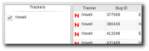

About

The goal of Entomologist is to provide a cross-platform, open source bug tracker client that works with multiple bug trackers (Bugzilla, Launchpad, etc) and provides an easier way to work with bugs on the desktop.
Supported Trackers
- Bugzilla 3.2+
- MantisBT 1.1+
- Launchpad